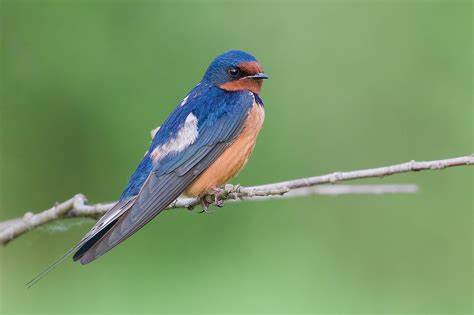
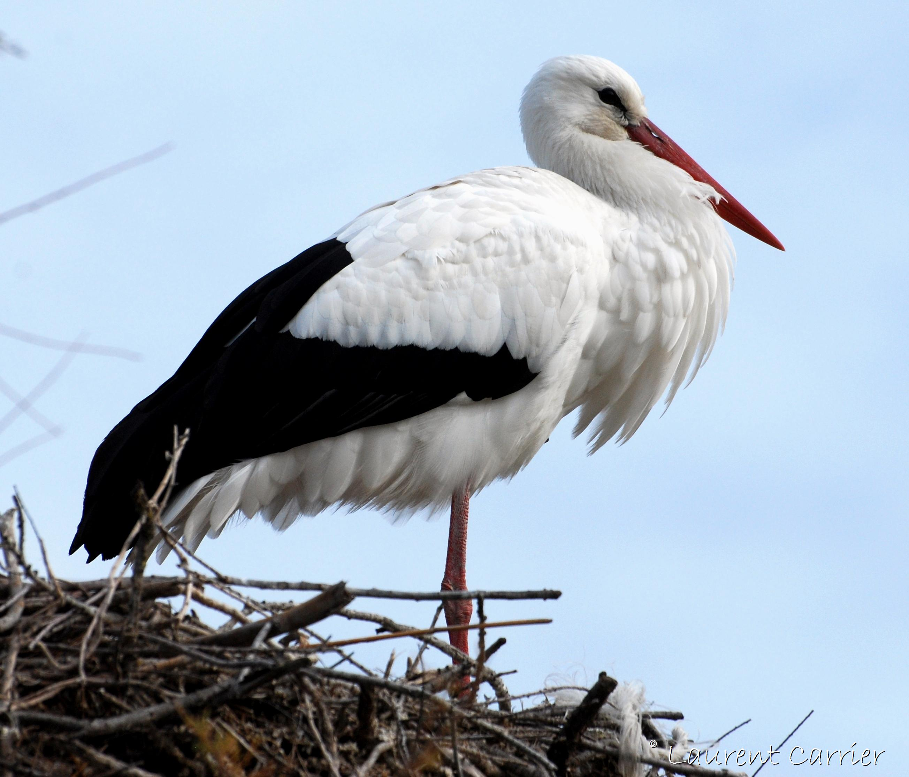
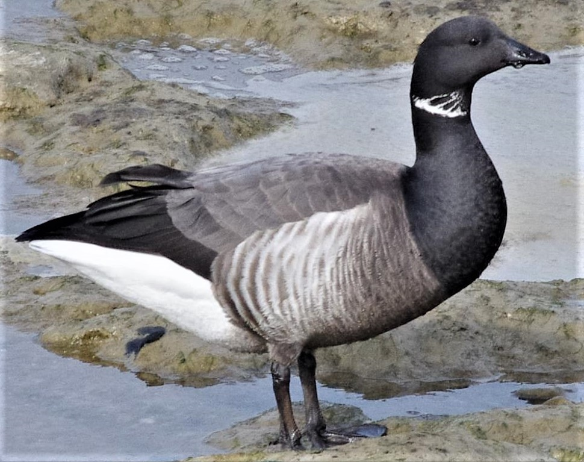

|
Habitat naturel |
Zone de migration |
Menaces |
|
| Hirondelle rustique |
Champs ouverts, prairies, et zones rurales avec des bâtiments pour la nidification. |
Elle migre entre l’Europe et l’Afrique subsaharienne. |
Pesticides réduisant leur source alimentaire (insectes), destruction des habitats de nidification, et
changement climatique perturbant leur calendrier migratoire. |
 |
| Cigogne blanche |
Zones humides, prairies, et marais peu profonds. |
Entre l’Europe et l’Afrique australe. |
Assèchement des zones humides, pollution, et électrocution sur les lignes électriques. |
 |
| Bernache cravant |
Zones côtières, estuaires, et marais salants. |
Migration entre les zones arctiques de reproduction et les côtes d’Europe et d’Afrique. |
Dégradation des estuaires et zones côtières due à l’urbanisation et au tourisme. |
 |